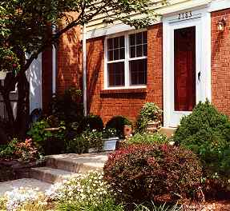

When you think about home, you're bound to think about wide open spaces with kids playing ball games on sunny afternoons, streets lined with trees that give shade in the summer, a rainbow of umbrellas around the pool, and quiet homes that provide refuge to kids and parents and friends. You have just imagined the picture of Pinewood Greens. This web site will tell you more about our neighborhood. For folks who live here already it will serve as a reference and keep you current. We also hope that it will also serve as an introduction for those seeking a new home in our neighborhood. Use the menu to learn more about who we are and how our Association works. Thank you for dropping by. If you have any questions or just want to stop and talk, just drop by the Association office. We stand ready to help.
Pinewood Greens announcements are posted to our Facebook page. You do not need to have a Facebook account to view the announcements, but if you are a Facebook member "Like" us to be kept up to date with Pinewood Greens announcements!